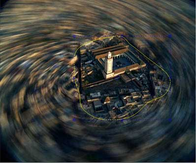

Automatically add more natural-looking motion blur to a sequence using ReelSmart Motion Blur. Our tracking technology is at the heart of ReelSmart Motion Blur, so there is no handwork involved. Of course you can add as little or as much blurring as you need, and even remove some motion blur. You can even can blur one sequence by using the motion from another for very interesting effects.
RSMB ufo parameters
- Blur Amount : Simply put: 0, means no blur. 1 means blur the "standard" amount (blur using the direction and amount of motion found). Of course you may add in as much or as little as desired. The default amount of 0.5 corresponds to 180 degree camera shutter opening. To remove motion blur, provide a negative amount of blur.
- Motion Sensitivity : Motion Sensitivity limits how much pixels can move. A value of zero assures that pixels can't move very much, and a value of 100 allows pixels to move as much as the motion estimator can calculate. The default value of 70 might sometimes be a bit too "ambitious" for some material... by reducing the sensitivity you might be able to create a more satisfactory result where there is large motion rather then some sort of inappropriate swirl that RSMB might introduce. Conversely, if there is only one object in the scene and it moves in large amounts, the default value of 70 may not be ambitious enough.
- High Quality : toggles high quality on/off
- 2D Points : you can help RSMB estimating the motion with 2D points . see helping RSMB with 2D Geometry (points) for details.
- Compute Optical Flow : toggles the computation of the optical flow on/off
- Points Size : change the opengl drawing size of 2D points
for more details , please read the RSMB manual (the General Manual should be in your RSMB installation directory)
building an fxtree with RSMB
If only one source is provided , the plug-in takes two successive frames of the input sequence, calculates the motion from one frame to the next, and applies blur based on the calculated motion
blurring with an external motion source
you can specify an external motion source to RSMB. In this case the original colour sequence has a painterly effect applied before the blur is applied.The right entry of the node is used to estimate the motion.
limiting the effect to a portion of the image
you can use the shape tools in the mask section of the ufo to delimit a portion of image

you can also use the obey matte entry of the ufo to limit the effect.